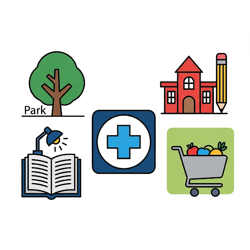
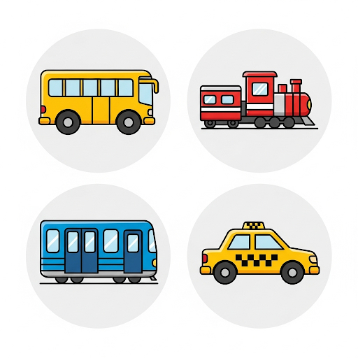
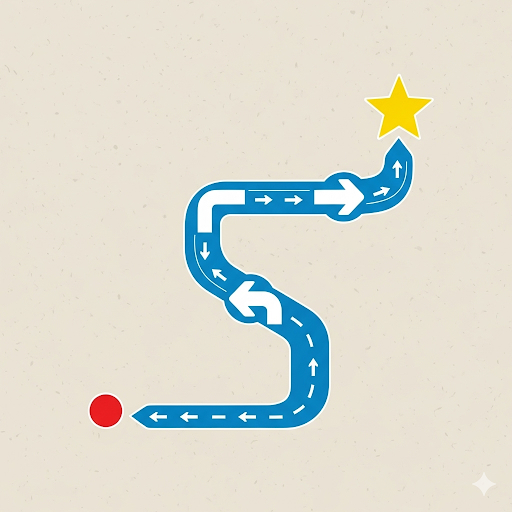
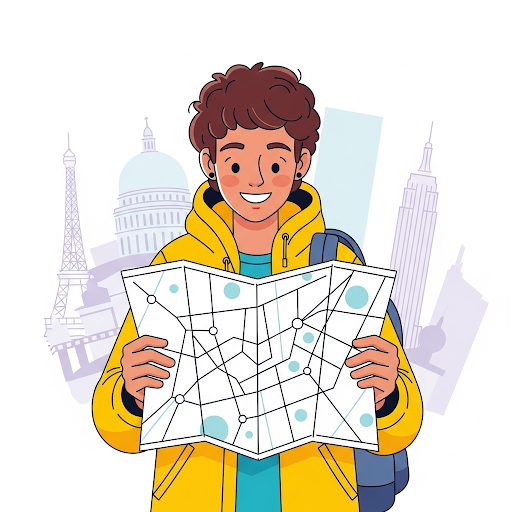
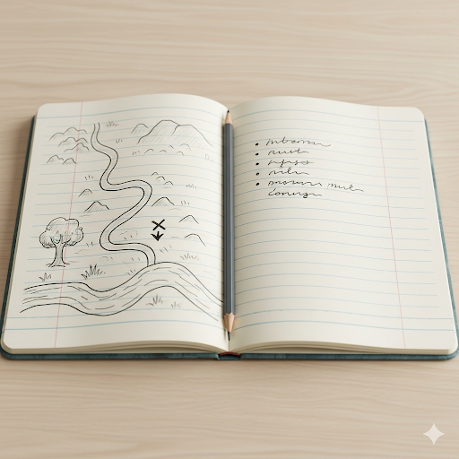

Navigating Places and Giving Directions
By the end of this lesson, students will be able to:
Students will identify different city places from pictures to introduce key vocabulary.
Introduction:
"Hello everyone! Today we are going to explore our city and learn how to get around!"
大家好！今天我們將探索我們的城市並學習如何四處走動！

Interactive activities to practice city navigation, transportation, and giving directions.
Students will learn names of public transport and practice prepositions to describe location.
Vocabulary: Transportation & Prepositions:

Activity: "Describe the Map."
Give students a simple map with a few places and public transport routes. Ask them to describe where places are using prepositions. For example, "The library is **next to** the park."
Students will practice asking for and giving directions to get to different places on a map.
Phrases for Directions:

Activity: Role-play "Tourist & Local."
In pairs, one student acts as a tourist asking for directions to a place on the map, and the other student acts as a local giving directions using the learned phrases.
Students will describe a favorite place in their city and give simple directions on how to get there.
Examples:
"My favorite place is the **City Museum**. You can take the **bus number 5**." (我最喜歡的地方是城市博物館。你可以搭5號公車。)

Students will create a simple map and write out directions for a short trip in their city.
"Draw a simple map of your neighborhood or a part of your city. Mark a starting point and a destination. Write out the directions to get from the start to the end."
"How to get from my house to the library."
"From my house, turn right onto Main Street. Go straight for two blocks. The library is on your left, next to the park."
Map Your Trip: 繪製你的旅程地圖

"Please write your entries on a separate piece of paper or in your notebook."
請將你的作業寫在一張獨立的紙上或筆記本裡。